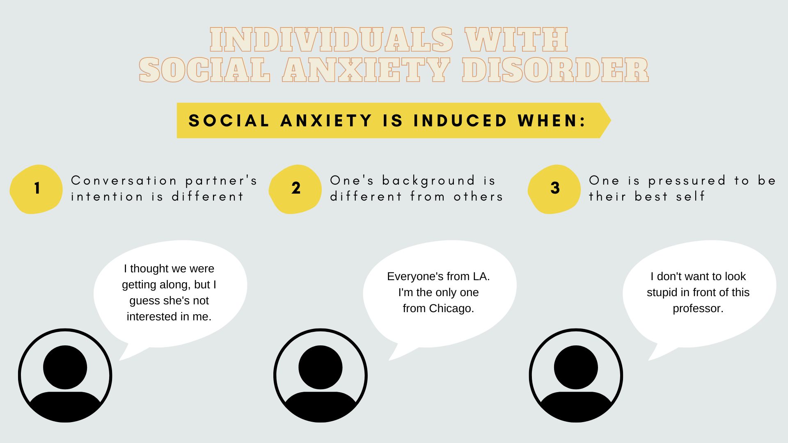
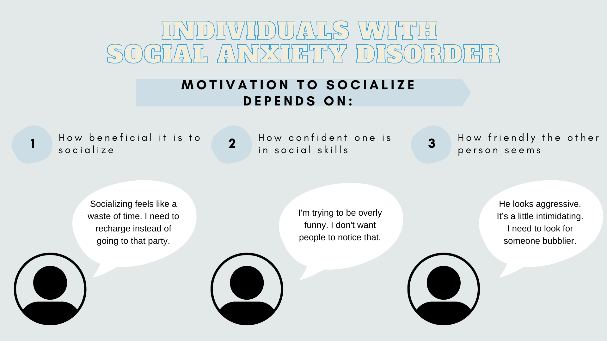
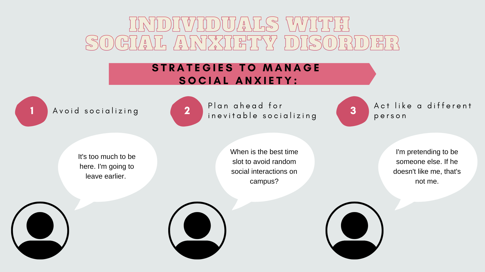

How Socially Anxious Individuals Communicate
This is a research project I conducted as a Lead Mixed-methods Researcher at USC SOLVE-IT.
Project
The Problem
Individuals with social anxiety disorder (SAD) are prone to social isolation, even though they desire intimate interpersonal relationships. To develop an effective intervention for them, we need an in-depth understanding.Research Questions
What situations induce social anxiety?
What motivates socially anxious individuals to avoid or pursue socializing?
What are the strategies of socially anxious individuals to manage social anxiety?
The Goal
Find out what individuals with SAD experience, which can be used to develop realistic social situations in VR interventions.Research Design
Analysis
Themes


Key Findings
Recommendations
Lessons
Learn More
Click the image to check out my first-authored journal article published in Health Communication based on this project